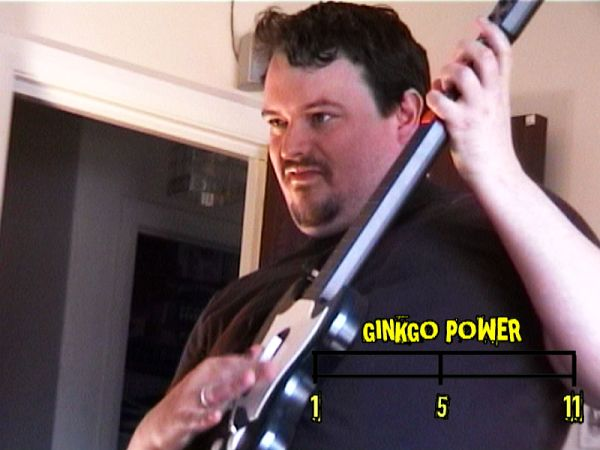
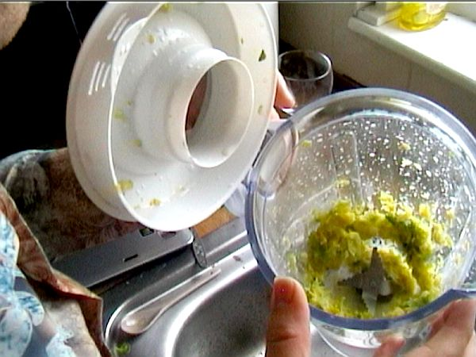
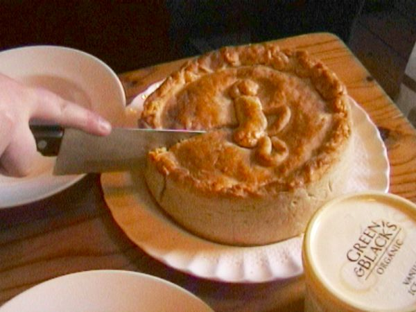
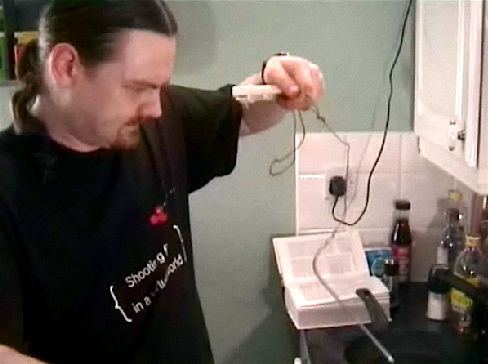

Episodes
First Episode: The Perfect Steak
We learn the science of the perfect steak - and how to cook it using a home vacuum cleaner and a blowtorch.
The Fife Diet - Part 1
]
Locally-sourced foods: saviour of the planet or big hippie fad? We attempt a week on the “Fife Diet”, eating only foods from the Scottish county of Fife, to find out. Part 1: to Fife!
The Fife Diet - Part 2

Locally-sourced foods: saviour of the planet or big hippie fad? We attempt a week on the “Fife Diet”, eating only foods from the Scottish county of Fife, to find out. Part 1: to Fife!
Blowtorches!

Are kitchen blowtorches highly specialised kitchen tools, or useless substitutes for a real blowtorch? We pit a kitchen blowtorch against a plumber’s blowtorch … against a hairdryer.
Mythbusting: Herbal Teas

Alex doesn’t believe that Camomile, Ginkgo or Valarian herbal teas work. So he’s testing them, with the aid of Guitar Hero, World of Warcraft, and a LOT of tea…
Normal Person vs … Gordon Ramsay

Can geek Johnnie cook Gordon f—ing Ramsay’s Brussel f—ing sprout souffle? We put the sweariest of all celeb chefs to the test.
Health Grills
We test a Health Grill. Scientifically. No, wait, that’s not right. Sureallistically. That’s it.
Mythbusting: Preheating Ovens

We investigate cooking myths - do you really need to preheat your oven or is it just a waste of energy?
Normal Person vs … Nigella Lawson

Normal People test celebrity chef recipes once again, as Alex takes on Nigella’s Double Apple Pie. Will it be scrumptious or scary?
Digital Thermometers - tested!

Digital Thermometers - total cooking revolution or big techie waste of time? Hugh attempts to convert the others to the Joy of Probes…
Blenders!

Will it blend? Or will it just splash FAIL around our kitchen? Kamikaze Cookery tests three stick blenders, investigates the wonderful world of soups and foams, and more.
Normal Person Vs… Jamie Oliver

We’re on a mission - to see whether celebrity chef recipes are any use to normal people. This week - Paul, Jamie Oliver, and a lot of pasta dough…
Mini-Episode: More Sous-Vide
Following on from The Perfect Steak, Hugh talks about other things we can cook sous-vide.
The Perfect Steak
We learn the science of the perfect steak - and how to cook it using a home vacuum cleaner and a blowtorch.
Chicken doesn’t have a great reputation as a meat. People call it bland. But it doesn’t have to be that way.
During my time off from Kamikaze Cookery, I’ve been doing a lot of cooking, and learning a lot of new stuff. Some of it isn’t directly applicable to everyday living, like knowing the national dish of Laos (larb, a minced meat salad - nicer than it sounds). Other bits, though, really are - notably having had time to thoroughly go through many of my neglected recipe books.
I’ll be sharing a fair bit of this stuff over the next months, but right now I want to talk about what might be my favourite dish of all from a year’s testing - grilled chicken.
By “grilled” here, I mean grilled on a grill pan, a solid chunk of metal with ridges that you put on a stove, or potentially a barbeque. (Personally I’m using a seriously battered Le Creuset cast iron model) Top-down grills, which the Americans amongst us would call “broilers”, have rather seriously different cooking qualities (although they’re ace for sausages). But a ridged grill cooks fast and delivers lots of gorgeous searing on the meat, meaning Maillard reactions are a go, for that amazing caramelised crunchiness contrasting with the hot, fresh, tasty meat.
h2. Thigh FILLETS are the win.
Chicken breasts don’t have a great reputation amongst the cookerati, which I think is slightly unfair. However, for a simple grill, you really want the flavourful, mixed dark and light, slightly fatty meat of a thigh. Grilled chicken breast is not only more expensive but also less tasty.
But there’s a problem with that - a whole thigh takes forever to grill, and is a bit of a dicy proposition even if you’re using a thermometer. My one undercooked-chicken FAIL of the last year was courtesy of some stovetop-grilled chicken thighs - you’ve got to watch hot and cold spots, which even induction cookers and cast iron can produce, you’ve got to watch cooking all the way through the meat, and you’ve got to watch the wierd thermal dynamics around the bone. In short, whole chicken thighs are great for all-over cooking in stews or ovens, but suck donkey balls for grilling.
However, most UK supermarkets at least now stock thigh fillets. They’re damn good value (about four pounds for 500g of free-range high-quality thighs from Sainsburys in the UK), they taste gorgeous, and they’re thin, so they cook extremely fast on a grill. Most of them are skinless, but the grilling process gives so much flavour it doesn’t matter.
You could fillet your own thighs, of course. I could peel tomatoes for ragu too, but I can’t usually be arsed to do either. They’re about comparable levels of pain in the ass.
(Finally, one neat tip if you cook sous-vide. Grilled chicken breast is a two-minute job if you cook the breast at low temperature - and by “low” we mean 60 degrees centigrade, a la Douglas Baldwin’s guide. ONce they’re done, simply slap them on the grill for a minute each side - the only way to get really tasty grilled breast. Make up a really good caesar dressing, grab some anchovies and some crispy lettuce, and you’ve got the basis of a world-beating grilled chicken salad. )
h2. “Smoky” is the name of the game in grilled chicken recipes.
Solo, grilled chicken thighs aren’t bad. But the heat and the fat means that they take up appropriate flavours like you wouldn’t believe.
My vote for best meal I’ve made all year goes to Nigel Slater’s chicken thighs with thyme leaves. Just rub the thigh fillets with good olive oil and fresh thyme - don’t even bother stripping it from its branches, just stick sprigs of it on there - then grill. The smell is incredible - one of the few meals that works much better if you’re eating it where you’re cooking.
He also recommends balsamic vinegar, onions, or French mustard as tastes to go with grilled chicken. I’d also suggest lemon or lime - grilled lemon chicken is a classic, of course - to cut through the smoke and bring out high notes to the taste, or maybe even white wine - you could try just heating the pan hot then almost basting the chicken with it every couple of minutes. Barbeque sauce, provided it’s good stuff, or Moroccan tastes like cumin also work a treat.
h2. Fat, fat, fat.
It’s all about the fat in recipes for grilled chicken. Chicken thighs already have quite a bit, of course, and this is a good reason to keep the skin on if you can get the skin-on fillets. (The other reason, of course, is that chicken skin is gorgeous).
Otherwise, you’ll be wanting to add some serious fat content in there. Olive oil rubbed into the chicken tastes fantastic in an “oh my god, I’m in an Italian tourism advert” sort of way. Butter, either rubbed on, plonked on after, or both, gives it a rich, expensive feel. And cream or creme fraiche makes a great base for a sauce, contrasting nicely with the spare feel of the grilled chicken and picking up all the grilled, charred flavours.
Any other tips for grilled chicken?
Read more →
It’s a source of amazement to me that when I visit the US, in particular, I don’t see electric kettles.
Of all my household gadgets, the humble electric kettle is certainly the most frequently used. More frequently than my sous-vide water bath, my Bamix mixer, even my (wonderful, wonderful) induction hob, the £10 kettle from Tesco is what gets me through the day.
And as a result of this, and of being, as we all know, an enormous geek, I’ve managed to run across a fair amount of useful information on the subject of water, heating of. So here it is, my ode to the humble but awesomely useful kettle.
Only a Tea Kettle should boil!
You don’t actually want to use boiling water straight out of the kettle most of the time. Instead, each type of beverage has its own preferred brewing temperature.
Black tea SHOULD be made with boiling water, yes. Indeed, if you don’t make it with just-boiled, 100 degree water, the extraction doesn’t work properly and it tastes like crap. Herbal teas - effective, ineffective, or just tasty - appear to mostly go the same way.
Green tea shouldn’t be let within a mile of boiling water, or you’ll overextract the tannin in the tea, of which there’s a lot more than in black tea. Green tea brewing times are complicated, complicated stuff, but the TL:DR summary for supermarket-quality tea is about 80 degrees Centigrade (180F - ish), for about 2 minutes.
If you pour boiling water straight out of your kettle onto your coffee, Steve from Has Bean Coffees will bury your house in used coffee grounds. Well, OK, he won’t. But you’ll make crap coffee. The temperature for coffee extraction is one of those frightningly complicated problems that causes any argument to end in graphs. However, for a French Press, which is probably what you’re using if you want water from an electric kettle, various sources specify anything between 89 and 93 degrees centigrade.
For both tea and coffee, remember that the temperature of the water changes when it hits a cold teapot or coffee pot! Preheat for, as the kids say, The Win.
Deoxygenation - the myth and the tests
Most coffee connosuiers would say that you shouldn’t leave water in the kettle once it’s boiled, if you want the best quality tea or coffee. Boiling the water drives off the dissolved oxygen, and that oxygen is important both for tea making and coffee. Allegedly.
Is this true? Well, there appears to be some truth in it, but it ain’t proven by any means. However, some testing over at CoffeeGeek seems to show that oxygenated water may change, and perhaps clarify, the taste of coffee. in addition, some hardcore coffee geeks are experimenting with post-brewing aeration of coffee, just as it’s done with wine. Interesting stuff, and look for a test on it here soon.
The coffee and tea extraction processes is terrifyingly complex, hence the uncertainty, involving at least 800 flavour compounds, according to Harold McGee. His book “On Food And Cooking” has nothing to say about freshly-brewed or otherwise water, but does mention that many waters aren’t ideal for tea or coffee - he recommends using Volvic mineral water.
Beware the “Water Heater”
Tefal’s Quick Cup electric kettle promises “Hot water in 3 seconds”, by heating water as it’s pumped rather than in a chamber like a kettle. It’s a neat idea, and only heating the water you need makes sense.
However, according to all reports, the darn thing doesn’t produce boiling water, just hot water, around 88 - 92 degrees centigrade. That’s arguably a little cool for coffee, great for green tea, and totally useless for black tea - and indeed, the Amazon review page is full of unhappy tea drinkers .
Caveat teadrinkor.
Rival hot water gadget the Eco-Kettle, by contrast, actually offers three temperature settings - 80 degrees, 90 degrees, and 100 degrees. That’s actually a damn fine idea, and might persuade me to buy one. Anyone know how accurate they are?
PID for Tea
This one’s more of an idea than a tip. There’s no reason you couldn’t take a PID temperature controller such as the one I originally used to build an improvised sous vide bath, and connect it to a cheap electric kettle. (Let’s face it, when you’re playing with the electricity supply, you don’t want to risk melting your sixty quid Dualit kettle.)
Why? Well, one of the major pains in the neck when brewing french-press coffee, in particular, is timing the grinding of the coffee to the heating of the water. The water, of course, hits 100 degrees, and then starts cooling down, and we want to catch it at about 94-95 degrees C (202F) in order to achieve optimum brewing temperature. However, we might well also be using a hand-grinding coffee grinder for the best grind, we don’t want to leave our coffee ground because the aromatics escape, and timing a hand-grind of 50 grams of coffee to 30 seconds after your kettle boils is… tricky.
(Oh, and the temperature drop is obviously dependent on the volume of liquid in the kettle. Basically we’re talking thermometers at dawn here.)
However, with a PID, there’s really no reason you couldn’t hold the temperature at 94 degrees Centigrade indefinitely, or at least for the 3 minutes it takes to frantically grind. Worth A Try. Another KKC test coming up, I think.
P.S. - did you realise it’s possible to buy a, wait for it, electric pink kettle ? Indeed, you can get a range of the damn things. Praise capitalism. Getting a yellow kettle , however, is significantly harder.
Read more →
No it isn’t.
However, it is on extended hiatus. Basically, my intention was to pick up KKC again last year, figure out a format that meant we could produce it in a reasonable time and, as the orcs of today say, GOOOOG!
Then Death Knight Love Story://www.deathknightlovestory.com happened.
For those of you who don’t know, my day job is as an animation director. During the first year of KKC, I’d been taking a sabbatical to work with Real Film - hence, KKC. However, in 2009 I got back to work, and decided to write a script for a short film to get started making motion capture projects.
I showed it to a few people. Rather famous people. And they showed it to some even more famous people, like Joanna Lumley, Jack Davenport, Anna Chancellor and Brian Blessed. Unexpectedly, they thought it was fantastic, and agreed to come work on it for a pittance.
At that point, all other projects got shoved off the table.
However, one day soon DKLS (as it is known) will be done, and I’ll have some free time. And at that point I intend to do more stuff with KKC. NOt sure WHAT more stuff - a full series might be unlikely, but we might find a way to do it - but more stuff.
So, apologies for the wait. We ain’tn’t dead. We have no idea what we’re doing, but we’re still intending to do something.
Read more →
Martin “Khymos” Lersch is, as usual, the man. Not the scary I-take-all-your-tax-and-oppress-hippies-and-rockstars man, but the cool, sorted, knowledgeable man. Probably with a very narrow black tie and a sharp suit.
Today he’s got a complete round-up of all the molecular gastronomy books coming out this year and damn, that’s an exciting list. All the El Bulli recipes! Ferran Adria’s A-Z of food! Herve This on ovens!
Damn you, Lersch, you just made my local Amazon branch rather richer.
Read more →
Heya! As promised, albeit some time ago, here’s our new videoblog, featuring Chantilly Chocolate Orange (a trick to make a mousse using nothing but chocolate and orange juice) and some discussion of the future of KKC. Let us hear your comments!
.
Read more →
The camera’s cables vanished. The camera spontaneously discharged. The supermarket was out of ice. And my computer got its first virus in years, which took most of a day to kill. Gah.
So, expect a KKC shortie update first thing on Monday! In it, I’ll be demonstrating a Neat Trick mixing liquid chocolate with orange juice to create a whipped cream of chocolate (you may know it already as a varient on Herve This’ Chantilly Chocolate), and talking about the future of KKC, and why you haven’t seen a new series yet.
UPDATE - On the upside, in the last hour I’ve come up with 4 ideas for new episodes/live shows. So you’ll probably be seeing more soon.
Read more →
I’ll do the Tandoor post another time - for now, here are some of the pics and videos from Day 2 of KKC Live:


[](“http://twitpic.com/6k7qc”)
Its not really fuzzy. honest on Twitpic”> Its not really fuzzy. honest on Twitpic”>
Its not really fuzzy. honest on Twitpic”>


Read more →
We’re live on Day 2 of the KKC Live experience - watch at http://www.ustream.tv/channel/kamikaze-cookery-live, or follow along on Twitter at http://www.twitter.com/kamikazecookery if you’re just joining us and want to know what the hell’s going on, we now actually have something resembling an explanation:
Read more →
We’re off to shop right now, but we have the … IPHONE!!!!! … so if you comment here, we’ll pick it up and reply either then or later.
Read more →
Yep, we’ve planned our first Kamikaze Cookery Live event, and we’ll be pitting two three-star chef recipes against each other and Alex and I as the normal (ish) people.
We’re going to be attempting to live-cook Cream of Blueberry Soup with Yoghurt Charlotte (from the French Laundry Cookbook) and Perfect Chicken Tikka Marsala (from More Adventures in Search of Perfection) over the 12 hours of our Live adventure. So tune in here or on Twitter tomorrow (continuing Wednesday), as we start what’s sure to be a series of misadventures and mishaps.
We have to build a home-made tandoor, for pity’s sake.
What could possibly go wrong?
UPDATE - We’ve also decided to add another possible dish, just in case there’s not enough going excitingly wrong. So, be sure to watch for the appearance of the Emergency Ravioli (as it has been christened).
Read more →